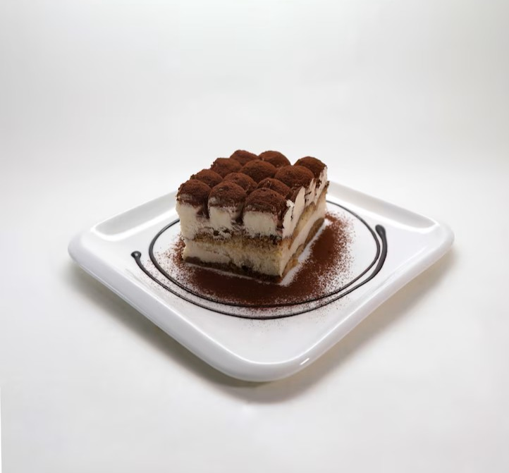
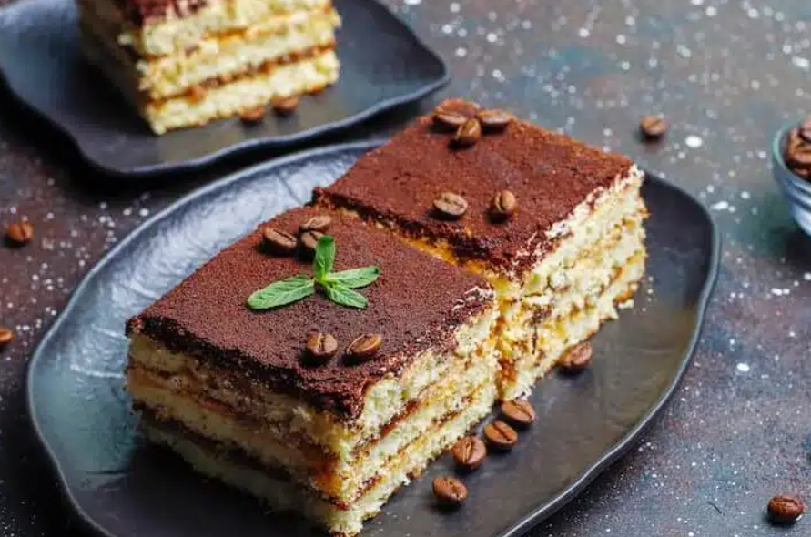

Tiramisú
Ingredientes
- 200 g de crema de leche (nata para montar)
- 1 taza de café fuerte
- 4 yemas
- 4 cucharadas de azúcar
- 300 gr de queso mascarpone
- 200 gr de vainillas
- Cacao amargo a gusto
- 1 medida de cognac o amaretto(opcional)
- Chocolate semi amargo rallado para la terminación
Preparación
- Batir la crema de leche con batidor manual o eléctrico hasta que esté aireada pero no completamente montada. Reservar.
- En un bol resistente al calor, mezclar las yemas con el azúcar. Llevar a baño María y batir constantemente hasta que la mezcla espese y tome un color pálido (aproximadamente 5 minutos). Retirar del fuego y seguir batiendo hasta que baje la temperatura.
- Batir el queso mascarpone hasta que esté cremoso. Agregar la mezcla de yemas y azúcar con movimientos envolventes hasta integrar completamente.
- Incorporar la crema batida a la mezcla anterior con movimientos envolventes, evitando que pierda aire.
- Preparar una fuente de vidrio o cerámica profunda. Sumergir rápidamente las vainillas en el café frío (si se usa licor, mezclarlo con el café antes). Colocar una capa de vainillas en la base de la fuente.
- Cubrir con una capa de crema de mascarpone y repetir el proceso hasta completar dos o tres capas de cada ingrediente. Luego llevar a refrigeración por un mínimo de 8 horas o, idealmente, de un día para el otro.

